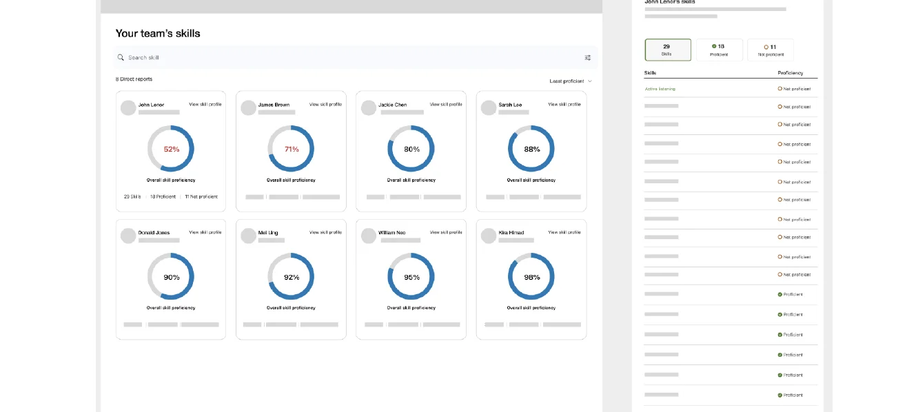
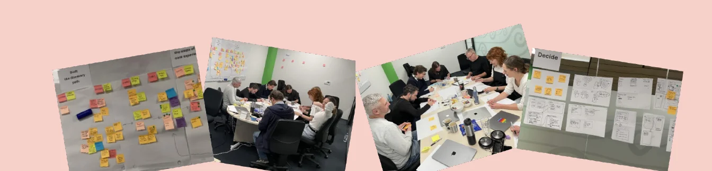
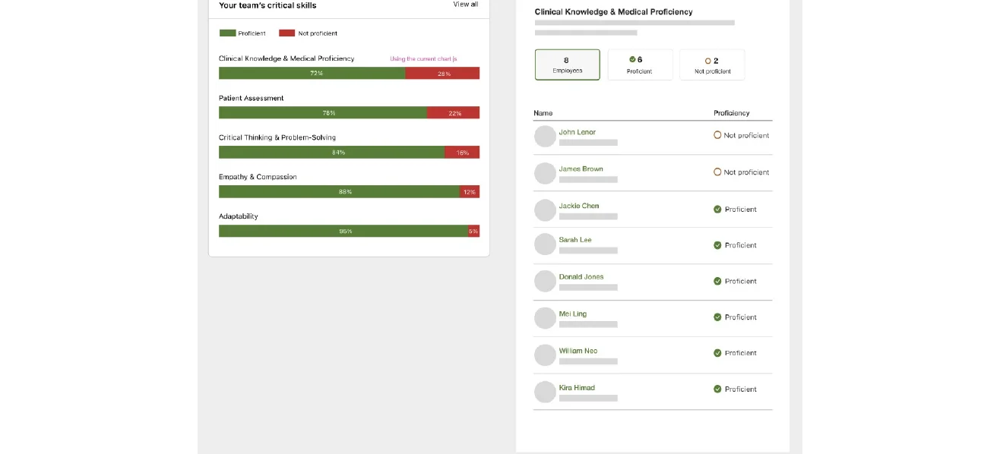
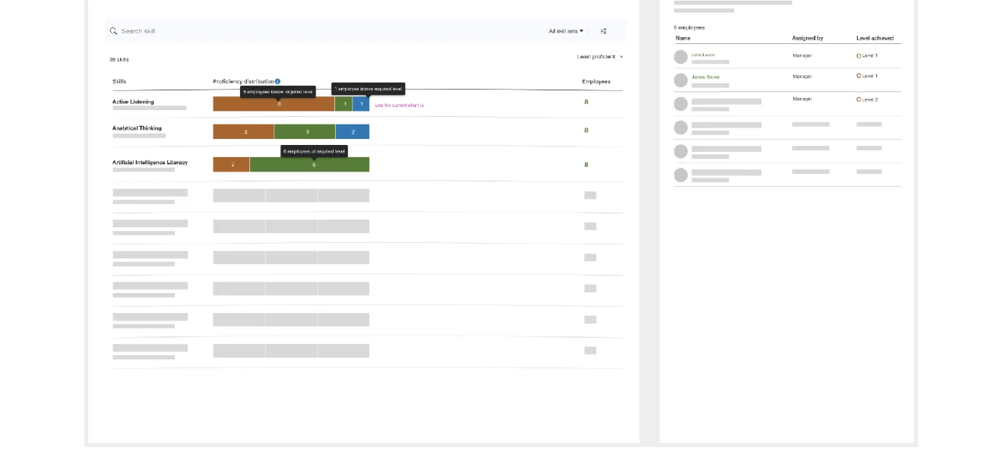
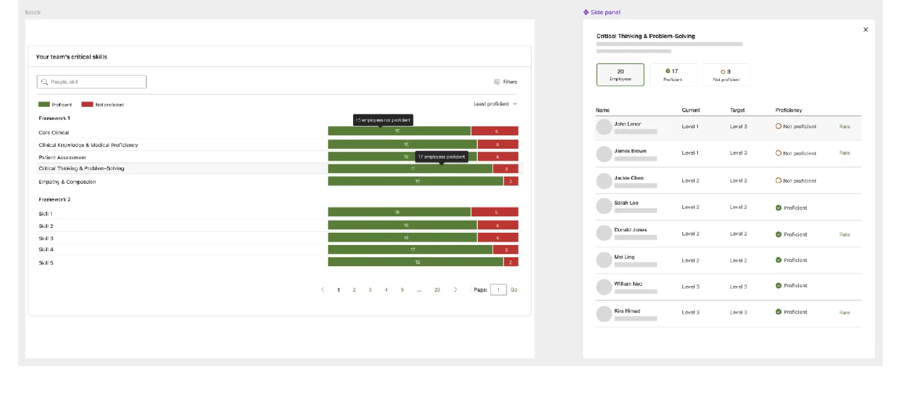
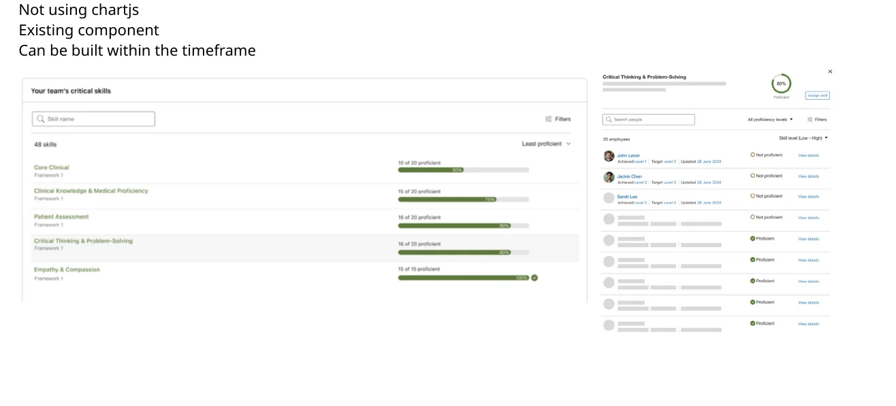

01 · User cards
A person-by-person view of employee skills.
A story about how customer research changed our product direction — and how collaboration, validation and technical constraints shaped a practical skills-gap MVP.
Totara supports organisations globally, including those in highly regulated and compliance-driven industries. Skills are important not just for career development, but for safe and compliant performance.
Competency adoption was low. Instead of immediately redesigning the UI, we wanted to understand why customers weren't adopting it.
The 40% figure was a target, not an achieved result.
My Product Manager and I developed a consistent set of interview questions. We interviewed customers and partners in APAC while colleagues in the UK and US covered other time zones. We also reviewed industry research.
Why customers bought Competency, why some didn't, whether the feature delivered the value they expected, and where the greatest opportunity for growth existed.
“Competency” felt abstract. “Skills” felt practical and actionable.
Lack of integration reduced perceived value.
Customers described the experience as clunky and confusing.
The research revealed an opportunity to reposition the feature using language customers already understood. Our first step was small: update terminology throughout the product. But the decision opened up a much bigger opportunity.
Identifying skill gaps emerged as an important opportunity, particularly in compliance-driven environments. We identified three perspectives and chose the manager experience as our starting point.
Identify skill gaps across the organisation.
Understand skill gaps within the team and whether employees can perform their roles safely.
Understand personal skills and training needs.
I brought together the Perform team, including developers and architects, for a workshop. We reviewed customer interviews, mapped journeys, explored competitive examples, generated ideas and voted on promising directions.

Rather than deciding internally, we prototyped three ways to help managers understand their teams' skills.

A person-by-person view of employee skills.

A team-level view of proficiency and skill gaps.

Another way to compare skill levels and requirements.
We gathered feedback from six customers. Concept 2 resonated most strongly because it helped managers understand the distribution of skills across their teams.
We refined it using actual numbers rather than percentages, and made framework names more prominent for context.
Concept 2 selected
Our version of Chart.js couldn't support the required drill-down without workarounds that would complicate future upgrades. We explored an alternative using an existing component.
After checking it against customer requirements, we chose a progress-bar approach for the MVP. It addressed most important needs, fit the timeframe and avoided unnecessary technical debt.

The presentation documents the MVP design decision but does not provide post-release adoption metrics.
We started with low adoption and found an opportunity to reposition the capability.
Customers, product, design, engineering and architecture shaped the direction together.
We balanced user needs, technical feasibility and delivery constraints to find the right MVP.
For me, the final interface was only one part of the story. The most important work was understanding the problem, bringing people together and making thoughtful decisions along the way.